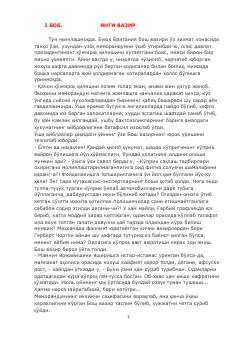

GPGarri Potter sehrgarlar maktabidagi oltinchi yilida qorong'u o'tmish sirlarini ochishga kirishadi.
Garri Potter sehrgarlar maktabidagi oltinchi yilida qorong'u o'tmish sirlarini ochishga va Voldemortning zaif tomonlarini topishga harakat qiladi. Bu qismda Garri eski darslik yordamida sehrli kuchlarini oshirib, 'Chala tug'ilgan shahzoda'ning sirli shaxsini aniqlashga urinadi. Voqealar rivoji sehrgarlar dunyosini qamrab olgan xavf-xatarlar va qahramonlarning o'sib borayotgan mas'uliyati atrofida kechadi.